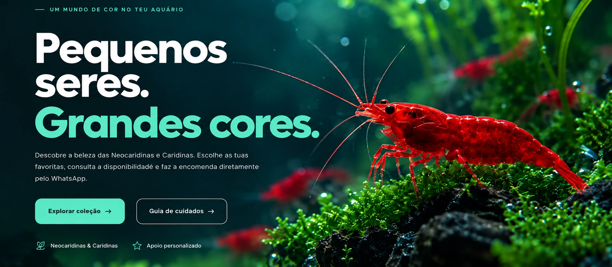
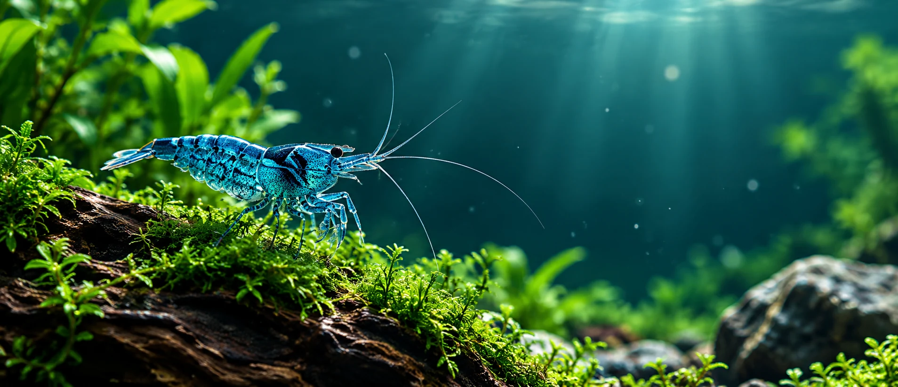

🌿 Criação responsávelBem-estar em primeiro lugar
📦 Embalamento cuidadoTransporte adaptado aos animais
💬 Compra acompanhadaEncomenda direta por WhatsApp
A NOSSA COLEÇÃO
Encontra a tua próxima cor.
Desde as Neocaridinas mais vibrantes às Caridinas mais exclusivas.
10 mutações
Não foram encontrados produtos. Experimenta outro filtro.

CUIDAR É FAZER PARTE DO ECOSSISTEMA
GUIA DO AQUARISTA
Um aquário cheio de vida começa com bons cuidados.
Parâmetros estáveis, aclimatação gradual e um aquário maturado são essenciais. Não mistures espécies com necessidades muito diferentes sem te informares primeiro.
NeocaridinaspH 6,5–7,8 · 20–24 ºCGeralmente mais tolerantes, ideais para começar.
CaridinaspH 6,0–6,8 · 20–24 ºCVariedades exigentes que beneficiam de água macia e estável.
Valores indicativos: confirma os parâmetros adequados à variedade que escolheres.
ENVIO & ENCOMENDAS
Da nossa criação
para o teu aquário.
Escolhe os animais, adiciona ao carrinho e envia-nos o pedido por WhatsApp. Confirmamos manualmente a disponibilidade, os portes, a data de expedição e o valor final antes de fechar a encomenda.
Ver produtos →01Escolhe as mutaçõesConsulta os preços e o stock disponível no catálogo.
02Prepara o carrinhoAdiciona a quantidade pretendida de cada mutação.
03Envia por WhatsAppRecebes a confirmação personalizada da encomenda.
ESTAMOS AQUI PARA AJUDAR
Dúvidas sobre camarões?
Fala connosco sobre mutações, compatibilidades e encomendas.